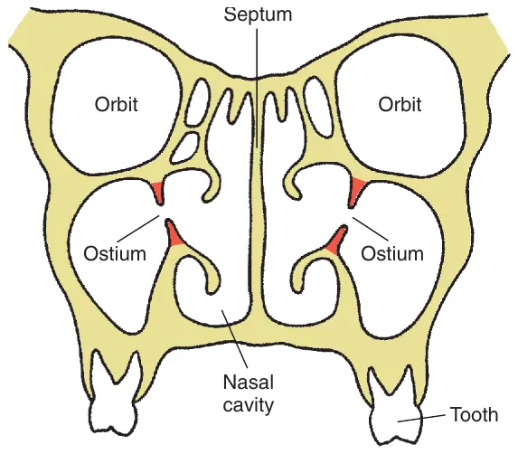
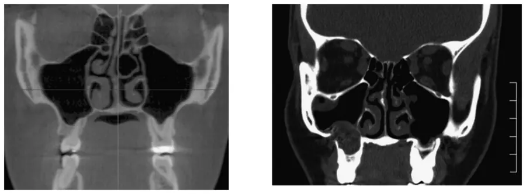

نسخه استخراجشده؛ ترجمه یا تأیید علمی انجام نشده است. وضعیت: captured
سینوسهای ماگزیلاری فضاهای حاوی هوایی هستند که استخوان ماگزیلا را دوطرفه اشغال میکنند — و نخستین سینوسهای پارانازالیاند که در دورهی جنینی تکامل مییابند.

و سه نام برای یک ساختار: سینوس ماگزیلاری بزرگترین سینوس پارانازال است، و آنتروم یا آنتروم هایمور هم نامیده میشود. واژهی «آنتروم» از واژهی یونانی بهمعنای «غار» میآید.
و ریشهی تاریخی نامش: ناتانیل هایمور، پزشک انگلیسی سدهی هفدهم، عفونت سینوسی مرتبط با یک دندان ماگزیلا را توصیف کرد — و نامش از آن زمان با نامگذاری سینوس همراه بوده است. یعنی همان پیوند دندان و سینوس که موضوع این یونیت است، از چهارصد سال پیش شناخته شده بود.
و حالا آناتومی — یک هرم چهاروجهی:
و ابعاد سینوس ماگزیلای بزرگسال — سه عدد و یک حجم: بهطور میانگین ۳۴ میلیمتر در جهت قدامی-خلفی، ۳۳ میلیمتر در ارتفاع، و ۲۳ میلیمتر در عرض؛ و حجم سینوس تقریباً ۱۵ تا ۲۰ میلیلیتر است.
و مهمترین نکتهی بالینی این اسلاید — پنوماتیزاسیون: سینوس میتواند پس از کشیدن یک یا چند دندان خلفی ماگزیلا، زائدهی آلوئولار باقیمانده را اشغال کند. و در بسیاری از موارد، سینوس عملاً تا ستیغ ریج بیدندان امتداد مییابد.
و نتیجهی سنجیدهشده: سینوس ماگزیلاری در بیماران بزرگسالی که در ماگزیلای خلفی بیدنداناند، بهطور معناداری بزرگتر از بیماران با دندانهای خلفی کامل است.
نخست یک واژه: التهاب بیشتر یا همهی سینوسهای پارانازال بهطور همزمان، پانسینوزیت نامیده میشود و معمولاً از عفونت ناشی میگردد. وضعیت مشابه در سینوسهای منفرد، سینوزیت ماگزیلاری یا سینوزیت فرونتال نام میگیرد.

سینوزیت حاد ماگزیلاری — میتواند در هر سنی رخ دهد. بیمار شروع را معمولاً چنین توصیف میکند: حس فشار، درد، پُری، یا همهی اینها که بهسرعت در مجاورت سینوس درگیر پدید میآید.
سینوزیت مزمن ماگزیلاری — سه علت و یک الگوی رفتاری: معمولاً پیامد عفونتهای باکتریایی یا قارچی کمشدت و عودکننده، بیماری انسدادی بینی، یا آلرژی است.
و الگویش: با دورههایی از بیماری سینوسی مشخص میشود که در ابتدا به درمان پاسخ میدهند و تنها برای بازگشتن — یا با وجود درمان علامتدار میمانند.
و حالا عدد کلیدی این یونیت: سینوزیت ماگزیلاری گاهی بهعلت مجاورت آناتومیک دندانها و سینوس ماگزیلا، از منابع ادنتوژنیک ناشی میشود — و منابع ادنتوژنیک تقریباً ۱۰ تا ۱۲ درصد همهی موارد سینوزیت ماگزیلاری را میسازند.
و یک هشدار: این وضعیت اگر درماننشده یا ناکافی درمان شود، میتواند بهراحتی گسترش یابد و سایر سینوسهای پارانازال را درگیر کند. و در موارد نادر، این عفونتها تهدیدکنندهی حیات میشوند و میتوانند شامل اینها باشند: سلولیت اوربیتال، ترومبوز سینوس کاورنو، مننژیت، استئومیلیت، آبسهی داخلجمجمهای، و مرگ.
و منابع ادنتوژنیکی که سینوس ماگزیلا را درگیر میکنند:
و یک تفاوت میکروبی که مستقیماً بر انتخاب آنتیبیوتیک اثر میگذارد:
نوع سؤال: ساخت کلمه · 9 خانه
حروف منبع: و · ت · د · ژ · ن · ک · ا · ی · ن